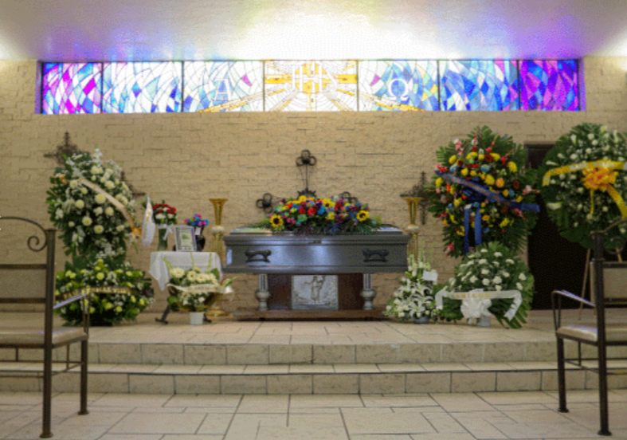
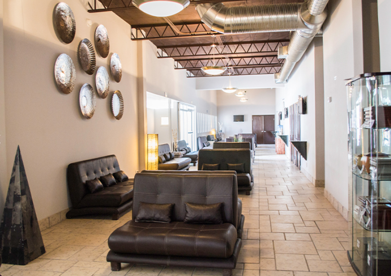
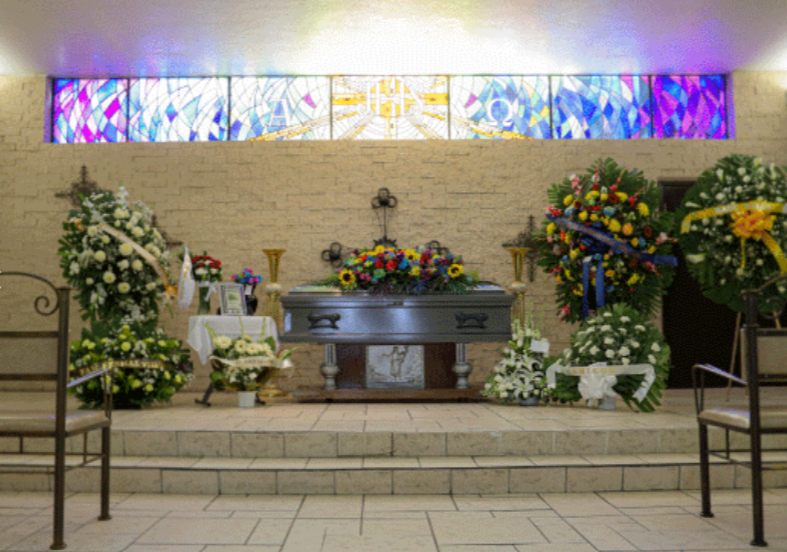
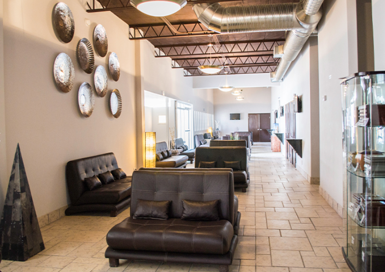

Atención
Personalizada
(656) 268-71-95
Contáctanos
Atención
Personalizada
Contáctanos
Este paquete contempla los siguientes elementos:
• Sala de velación por 16 horas, disponible en:
- Recinto de la Oración
- Perches López Mateos:
- Capilla Privada
- Capilla Aura (Privada Interior)
• Ataúd metálico tipo Presidente (en modalidad de renta para servicios de cremación).
• Traslado del cuerpo dentro del fundo legal de Ciudad Juárez.
• Servicio de embalsamamiento.
• Carroza funeraria para el traslado al servicio religioso y posteriormente al cementerio.
• Libro de registro de asistentes al servicio.
• 96 estampas religiosas conmemorativas.
• Gestoría para trámites y documentación.
• Plan de saldos insolutos.
• Urna de mármol, incluida únicamente en servicios de cremación.
• Servicio de cafetería durante el velorio.
• Opción a servicio de cremación.
Este paquete contempla los siguientes elementos:
• Sala de velación por 16 horas, disponible en:
- Perches López Mateos:
- Capilla 1
- Capilla 2
- Capilla 3
• Ataúd metálico tipo Presidente (en modalidad de renta para servicios de cremación).
• Traslado del cuerpo dentro del fundo legal de Ciudad Juárez.
• Servicio de embalsamamiento.
• Carroza funeraria para el traslado al servicio religioso y posteriormente al cementerio.
• Libro de registro de asistentes al servicio.
• 24 estampas religiosas conmemorativas.
• Gestoría para trámites y documentación.
• Plan de saldos insolutos.
• Opción a servicio de cremación.
 



Este paquete contempla los siguientes elementos:
• Sala de velación por 16 horas, disponible en:
- Perches Jardin:
- Capilla A
- Capilla B
• Ataúd metálico tipo Presidente (en modalidad de renta para servicios de cremación).
• Traslado del cuerpo dentro del fundo legal de Ciudad Juárez.
• Servicio de embalsamamiento.
• Carroza funeraria para el traslado al servicio religioso y posteriormente al cementerio.
• Libro de registro de asistentes al servicio.
• 24 estampas religiosas conmemorativas.
• Gestoría para trámites y documentación.
• Plan de saldos insolutos.
• Opción a servicio de cremación.
Nuestro servicio incluye:
• Levantamiento del cuerpo dentro del fundo legal de Ciudad Juárez.
• Traslado al área de reposo para su posterior cremación, previa programación.
• Proceso de cremación.
• Contenedor temporal para la conservación de las cenizas.
• Asesoría y gestoría en trámites y documentación.
• Plan de saldos insolutos.
Nota: Este servicio no incluye urna para cenizas.
Servicios adicionales con costo extra:
• Servicio religioso con presencia de cenizas (incluye renta de arca).
• Nichos para resguardo de cenizas.